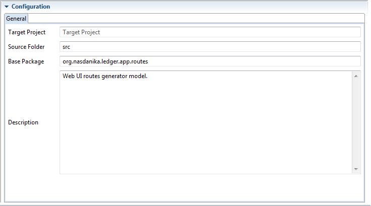
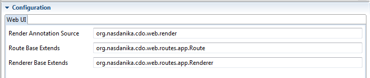
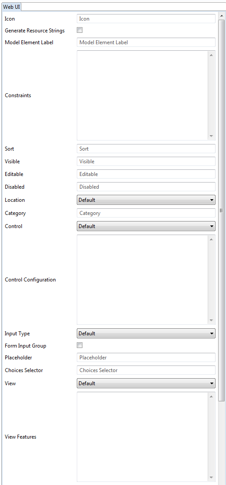
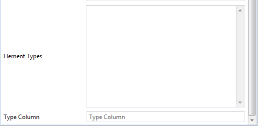

The Web UI generation target generates artifacts which are used by Nasdanika CDO Web Application Rendering framework for rendering web applications backed by CDO repositories.
This target uses data entered by the user into configuration forms to generate the following artifacts:
plugin.xml.





Future support
merging, code fragment
merging, annotation source, code fragment
merging, code fragment
merging
This page describes how to create model-driven web applications leveraging classes and interfaces in org.nasdanika.cdo.web.routes.app package of the org.nasdanika.cdo.web bundle, Renderer and Route in particular.
The sections below outline the entire process of creating a web application focusing on use and customization of application routes and renderers. You can find a detailed description of the entire process in the Server-side Java Development for Innovators online book, which is work in progress at the time of this writing.
The core concept of the approach described here is that Web UI can be rendered using metadata of the model elements such as EClass, EAttribute, and EReference.
Rendering is performed by the Renderer interface with default method implementations or by its sub-interfaces. Renderers shall be registered with
org.nasdanika.cdo.web.renderer extension point in order to be discoverable by
Renderer.getRenderer() methods.
Route class extends EDispatchingRoute and implements Renderer. It contains route methods which leverage rendering methods to build the UI.
Rendering can be customized with:
Eclipse RAP provides means of exposing EMF/CDO web UI in a Web browser. The approach described here is fundamentally different from the one used by Eclipse RAP.
Eclipse RAP exposes SWT API's to the web. It starts a UI thread on the server which handles interactions with the browser. Nasdanika CDO Web processes each Web UI interaction as an HTTP request in its own CDO transaction. It also supports WebSockets but they are not used by application renderers and routes described here.
Eclipse RAP provides its own widgets toolkit, here we are going to leverage Bootstrap and HTML.
The development process includes the following steps:
Set password action.
plugin.xml.
These steps are described in the sections below.
You'll need to download Eclipse Modeling package and install M2E, Tycho and Nasdanika Application Workspace Wizard. You may also install Nasdanika Story Editor, Nasdanika Ecore code generation editor and Web UI generation target so you don't have to do it later.
These steps are explained in Install prerequisites chapter.
Nasdanika plugins can be installed from
http://www.nasdanika.org/repository P2 repository.
This step is explained in the Nasdanika Application Workspace Wizard Documentation and Generate Application Projects chapter.
You can create the application domain model using several editors provided by Ecore Tools - a diagram editor and two types of tree editors, depending on your choice. For example you can start with the diagram editor to visually capture relationships between domain classes and then, after capturing "the big picture", switch to tree editors.
You may watch this, slightly dated, video - Create and document an ECore/CDO Model.
The way the Web UI is rendered can be customized in several ways, one of them being adding render annotations to the model. On the one hand it mixes the domain and the UI concerns, but on the other it allows to keep all things in one place - the model. This approach might be handy if the model developer is also responsible for the model UI so they have an idea how a particular model element shall appear in the UI.
The up-to date list of supported render annotations can be found in RenderAnnotation enum. Check the source code for literals to use in the model annotations.
Below is a list of render annotations with short descriptions grouped by the model element type:
constraint - defines validation constraints using XPath.
documentation - can be used to define model element documentation if it is not defined in the GenModel annotation.
icon - defines model element icon. If icon annotation contains
/ it is treated as URL, otherwise it is treated as css class, e.g. Bootstrap's
glyphicon glyphicon-close.
model-element-label - used to customize a model element label.
sort - XPath expression to use for sorting of items in tables and lists.
feature-items-container - YAML annotation which defines feature items container and its configuration.
horizontal-form - set to
false to change the default rendering.
label - a pattern which is interpolated with values of object features to generate object label. E.g.
{{name}} ({{code}}).
no-validate - disables HTML5 validation in forms.
view-item - if
true then the class view is rendered in the item container (accordion, tabs, or pills) along with references.
category - feature category. Categories are displayed as panels in the view and field sets in edit forms.
control - defines edit form control type -
input,
select, or
textarea.
control-configuration - a YAML map of control attribute names to values.
disabled - defines whether an editable feature control shall be disabled.
editable - defines editability of a visible feature.
feature-location - defines feature location - view, left panel, item container (tabs, pills, accordion), or inline (work in progress).
form-input-group - overrides the default decision of rendering control in a FormGroup or FormInputGroup.
input-type - input type if control is set to
input.
placeholder - XPath expression evaluating to the placeholder value for features. Placeholder value is an implicit application-specific value, different from the default value.
visible - defines visibility of a feature in the object view.
choices - a YAML map of values to labels or a list if values and labels are the same.
content-type - set to
text/html on attribute rendered in
textarea to wrap the area into
TinyMCE editor.
format - to use for rendering and parsing number and date values.
choices-selector -
JXPath selector of choices to assign to the reference.
choice-tree - allows to display choices in a containment tree.
element-types - specifies EClass'es of elements which can be instantiated and set/added to the reference.
type-column - indicates that the table listing reference elements shall display elements type in a type column.
view - Set this annotation to
list on to have elements rendered in a list instead of a table.
view-features - list of features to show in a reference item table.
Consult JavaDoc and source code for details.
By default render annotations source is
org.nasdanika.cdo.web.render. It can be customized by overriding
Renderer.getRenderAnnotationSource().
One possibility which this customization opens is having multiple sets of render annotations and switching between them at runtime based on some criterion.
You may also override
String getRenderAnnotation(C context, EModelElement modelElement, String key) method to load annotations from other sources, e.g. from
a database.
Edit and editor support are needed to create the initial model for your application. If you are planning building the application model from scratch in the web UI or programmatically then you don't need to generate edit/editor.
Set password action
You may consider adding the following two modifications to the editor:
The session initalizer generated by the wizard contains commented out code which loads initial model(s) from file(s) on first start. To initialize the repository you need to:
initial-content property of the session initializer OSGi component. Property value can contain tokens which are expanded using system properties, e.g.
<property name="initial-content" type="String" value="${my-initial-model}"/>.
my-initial-model system property shall be set to the location of the initial model file.
The simplest way to get going is to register a route which would serve all classes from your application EPackage using default render/route implementations and model annotations. To do so manually register a route for your EPackage in the app project
plugin.xml:
`xml
`
This approach may work perfectly fine in simple cases. However, if you want to localize your application or provide customizations not supported by annotations, you need to register class-specific renderers and/or routes. It can be done manually as well
Guest renderer and
Guest route sections below.
However, if your application model contains more than just a couple of classes, it is easier to generate renderer interfaces, route classes, their registrations, and resource bundles. This is what this section is about.
First of all you shall install:
As a reminder, you can install them from
http://www.nasdanika.org/repository.
After installation read how to create and generate the model in the
Nasdanika / Code generation section in the Eclipse help. This documentation is also available online:
See Run the application in Eclipse chapter.
There are three ways to customize the Web UI in addition to annotating the model:
The obvious use of resource bundles is localization. Out-of-the box the framework provides some localized messages for Russian and Spanish (thanks to Google Translate).
You can use resource bundles to customize the UI if you did not annotate the model and/or to override model-level annotations. Resource property name format is
<model element type>.<model element name>.<annotation>, e.g.
class.Account.label
reference.transactions.icon
You can also use resource bundles for contextual customization. For example, let's say you have have class
Account with containment reference to class
Transaction with attribute
amount.
To define an icon for
amount attribute you can annotate the attribute in the model or add
attribute.amount.icon=... property to the
Transaction.properties resource. If you want to have a different icon when transactions are displayed in the account view you can set the following property in
Account.properties -
reference.transactions.attribute.amount.icon.
Values of some resource properties can be rather large, e.g. localizations of model elements documentation. Such values can be put to their own files and be referenced by adding
@ at the end of the property. For example,
attribute.amount.documentation@=<relative or absolute url of documentation resource>.
This technique can also be used for pulling dynamic values, e.g.
attribute.currency.choices@=http://... will pull a list of currencies from an external URL.
Renderer has quite a few methods, which might be scary at first. The reason of having so many methods is to keep them relatively short and make it easier to override specific parts of functionality. A few long methods deal with different permutations of rendering metadata and if you are to override them for a specific model element, the overridden method would typically be much shorter.
The default implementations also serve as reference implementations - you are encouraged to review them, copy the necessary code fragments to your implementation and customize them as needed.
The snippet below shows customization for a specific feature and falling back to the default behavior for other typed elements. The code below resolves object from a String attribute.
`java
@Override
default Object renderTypedElementValue(
CDOTransactionHttpServletRequestContext
Renderer<CDOTransactionHttpServletRequestContext<LoginPasswordCredentials>, EObject> customerRenderer = getRenderer(MyPackage.Literals.CUSTOMER);
if (typedElement instanceof EStructuralFeature
&& typedElement == MyPackage.Literals.MY_CLASS__CUSTOMER_SSN
&& value instanceof String && ((String) value).trim().length() > 0) {
Customer customer = resolveCustomerBySSN(context, (String) value);
if (customer != null) {
return customerRenderer.renderLink(context, myObj, true);
}
}
return Renderer.super.renderTypedElementValue(context, typedElement, value);
}
`
This section groups these methods by their purpose and provides quick overview of what each method does. As usual, JavaDoc provides more details, and source code is the final authority.
getHTMLFactory(C) - returns
HTMLFactory for building Web UI.
getObjectURI(C, T) - returns object URI to construct links.
chain(ResourceProvider<C>) - Returns an instance of renderer chained with the masterResourceProvider.
getLocale(C) - Returns locale. The default implementation returns the locale of the HTTP request. You may override it, e.g. to use locale from the user profile.
getMasterResourceProvider(C) - If this method returns non-null value, then the master resource provider is used first to retrieve resources and the renderer's own logic is used only if the provider doesn't contain requested resource.
getRenderAnnotation(C, EModelElement, RenderAnnotation) - Returns render annotation.
getRenderAnnotation(C, EModelElement, String) - Returns render annotation.
getRenderAnnotationSource(C) - Returns render annotation source,
org.nasdanika.cdo.web.render by default.
getRenderer(EClass) - Returns a renderer instance for a class. The default implementation returns renderer from the renderer registry which is populated by extensions of
org.nasdanika.cdo.web.renderer extension point.
getRenderer(M) - Returns a renderer for an object.
getResource(C, ENamedElement, String) - Returns named element resource.
getResource(C, String) - Returns resource.
getResourceBundleClasses(C) - Returns a list of classes to use to look for resources.
getResourceString(C, ENamedElement, String, boolean) - Returns resource string for a named element.
getResourceString(C, String) - Returns resource string without interpolation.
getResourceString(C, String, boolean) - Returns resource string optionally interpolating
{{<token name>}} tokens with values of other resource strings.
getYamlRenderAnnotation(C, EModelElement, RenderAnnotation) - Returns render annotations parsed as
YAML by
SnakeYAML.
getYamlRenderAnnotation(C, EModelElement, String) - Returns render annotations parsed as YAML.
createPegDownLinkRenderer(C) - Creates
Pegdown
LinkRenderer which opens links in a new window/tab.
firstHtmlSentence(C, String) - Extracts the first sentence from HTML text as plain text.
firstSentence(C, String) - Extracts the first sentence from plain text.
getEClassifierDocRef(C, EClassifier) - Returns documentation link for EClassifier. Returns null by default. Override as needed.
getMaxFirstSentenceLength() - Returns maximum length of the fist documentation sentence for showing as a tooltip. Defaults to
250.
getMinFirstSentenceLength() - Returns minimum length of the fist documentation sentence for showing as a tooltip. Defaults to
20.
markdownToHtml(C, String) - Converts
Markdown to HTML. Used to render model documentation which is expected to be in markdown.
renderDocumentation(C, EModelElement) - Renders model element documentation.
renderDocumentationIcon(C, EModelElement, Modal, boolean) - Renders model element documentation icon with a tooltip. Click on the help icon opens either a documentation dialog or a model element documentation page.
renderDocumentationModal(C, EModelElement) - Renders model element documentation
Modal Dialog
renderEditableFeaturesDocModals(C, T) - Renders documentation modal dialogs for editable features.
renderFirstDocumentationSentence(C, EModelElement) - Renders the first documentation sentence.
renderHelpIcon(C) - Renders help icon.
renderModelElementFormGroupHelpText(C, T, EModelElement, Modal) - Renders help text as the first documentation sentence with a help icon.
renderModelElementsDocModals(C, T, Collection<EStructuralFeature>) - Renders documentation modal dialogs for a collection of model elements.
renderVisibleFeaturesDocModals(C, T) - Renders documentation modal dialogs for visible features.
This section lists methods used to render object view. Features in the object view can be displayed in several locations:
Many features can be displayed as tables or as lists.
getFeatureCategory(C, EStructuralFeature, Collection<EStructuralFeature>) - returns feature category for grouping features into panels in views and fieldsets in edit forms.
getAutoCategory(C, EStructuralFeature, Collection<EStructuralFeature>) - returns auto-category for a feature, which is inferred as a common prefix for two or more features.
getFeatureLocation(C, EStructuralFeature) - returns location where a feature shall be rendered - view, left panel, item container (tabs, pills or accordion), or inline.
getFeatureSortKey(C, T, EStructuralFeature, Object) - returns an object for sorting feature values or null if feature values shall not be sorted.
getIcon(C, T) - returns icon "location" for a given object. If the location contains
/ it is treated as icon URL, otherwise it is treated as icon class, e.g.
fa fa-user.
getModelElementIcon(C, EModelElement) - returns icon location for a model element, e.g. attribute or reference.
getPlaceholder(C, T, EStructuralFeature) - returns feature value "placeholder".
getReferenceElementTypes(C, T, EReference) - returns a list or EClass'es which can be instantiated and instances can be added to a given reference.
getReferenceRenderer(EReference, M) - Returns renderer for a feature. The renderer is chained with this renderer as its master resource provider with
<feature class>.<feature name>. prefix.
getVisibleFeatures(C, T, FeaturePredicate) - returns a list of features to include into the the object view.
isObjectPathRoot(C, T, EObject) - checks if a given object is the object path root, i.e. it shall be the first entry in the breadcrumbs.
isSortFeatureValues(C, T, EStructuralFeature) - returns true if feature values shall be sorted.
isViewItem(C, T) - if this method returns true, then object view is rendered in the item container.
nameToLabel(String) - Derives label (display name) from a name. The default implementation splits name by camel case, capitalizes the first segment, uncapitalizes the rest and joins them with a space. E.g.
customerFirstName ->
Customer first name.
renderAddIcon(C) - renders an icon for the
Add button.
renderCancelButton(C, T) - renders
Cancel button.
renderCancelIcon(C) - renders an icon for
Cancel button.
renderClearIcon(C) - renders an icon for
Clear button.
renderCreateIcon(C) - renders an icon for
Create button.
renderDeleteButton(C, T) - renders
Delete button.
renderDeleteIcon(C) - renders an icon for
Delete button.
renderDetailsIcon(C) - renders an icon for navigating to object view.
renderEditButton(C, T) - renders
Edit button.
renderEditIcon(C) - renders an icon for
Edit button.
renderFalse(C) - renders
false. The default implementation returns an empty string.
renderFeatureAddButton(C, T, EStructuralFeature) - Renders feature
Add button.
renderFeatureCategoryIcon(C, EStructuralFeature, Collection<EStructuralFeature>) - renders feature category icon.
renderFeatureCategoryIconAndLabel(C, EStructuralFeature, Collection<EStructuralFeature>) - renders feature category icon and label.
renderFeatureCategoryLabel(C, EStructuralFeature, Collection<EStructuralFeature>) - renders feature category label.
renderFeatureItemsContainer(C, T, Map<EStructuralFeature, Modal>) - renders feature items container -
tabs (default), pills, or
accordion.
renderFeaturePath(C, T, EStructuralFeature, String, Breadcrumbs) - renders feature path which includes the object path, feature category (if any) and feature name.
renderFeatureValueDeleteButton(C, T, EStructuralFeature, int, Object) - renders feature value
Delete button.
renderFeatureValueEditButton(C, T, EStructuralFeature, int, Object) - renders feature value
Edit button.
renderFeatureValueViewButton(C, T, EStructuralFeature, int, EObject) - renders feature value
View button.
renderFeatureView(C, T, EStructuralFeature, boolean, Predicate<Object>, Comparator<Object>) - renders feature view.
renderIcon(C, T) - renders object icon.
renderIconAndLabel(C, T) - renders object icon and label.
renderLabel(C, T) - renders object label.
renderLeftPanel(C, T) - renders the left panel. This implementation renders link groups for visible features with location set to
leftPanel.
renderLink(C, T, boolean) - renders object link.
renderModelElementIcon(C, EModelElement) - renders model element icon.
renderNamedElementIconAndLabel(C, ENamedElement) - renders model element icon and label.
renderNamedElementIconAndLabel(C, ENamedElement, Collection<EStructuralFeature>) - renders named element icon and label.
renderNamedElementLabel(C, ENamedElement) - renders model element label.
renderNamedElementLabel(C, ENamedElement, Collection<EStructuralFeature>) - renders named element label.
renderObjectHeader(C, T, Modal) - renders object header. The default implementation renders object class label, object label, and a documentation icon.
renderObjectPath(C, T, Object) - renders object path to a fragment with given separator.
renderObjectPath(C, T, String, Breadcrumbs) - renders object path to breadcrumbs.
renderReferencesTree(C, T, int, Function<Object, Object>, boolean) - Renders an object tree of tree references of the argument object.
renderTreeItem(C, T, int, Function<Object, Object>, boolean) - Renders a tree item for the object with the tree features under.
renderTrue(C) - renders
true. The default implementation renders a green check mark (Bootstrap's
glyphicon glyphicon-ok).
renderTypedElementValue(C, ETypedElement, Object) - renders display value of a typed element.
renderView(C, T, Map<EStructuralFeature, Modal>) - renders object view.
renderViewButtons(C, T) - renders object view buttons bar.
renderViewFeatures(C, T, Map<EStructuralFeature, Modal>) - renders object view features.
renderViewItemLabel(C, T) - Renders label for the view item, if view is rendered in an item container.
wireDeleteButton(C, T, Button) - wires
Delete button.
wireEditButton(C, T, Button) - wires
Edit button.
wireFeatureAddButton(C, T, EStructuralFeature, Button) - wires feature value
Add button.
wireFeatureValueDeleteButton(C, T, EStructuralFeature, int, Object, Button) - wires feature value
Delete button.
wireFeatureValueEditButton(C, T, EStructuralFeature, int, Object, Button) - wires feature value
Edit button.
wireFeatureValueViewButton(C, T, EStructuralFeature, int, EObject, Button) - wires feature value
View button.
This section lists methods used to render object edit form. Selection of (multiple) choices for a value can be done with:
compareEditableFeatures(C, T, Consumer<Diagnostic>) - Compares feature values from the object with the original values stored in hidden fields. Creates error diagnostics for concurrently modified features.
getEditableFeatures(C, T) - returns a list of structural features to include into the object edit form.
getTypedElementChoices(C, T, ETypedElement) - invoked for select, radio and checkbox on non-boolean types.
getFormControlValue(C, T, ETypedElement, Object) - Returns typed element value to be used in form controls like input, select, etc.
getReferenceChoices(C, T, EReference) - invoked for select, radio and checkbox on non-boolean types.
isRequired(C, T, ETypedElement) - return
true if form control for the typed element shall have
required attribute.
parseTypedElementValue(C, EStructuralFeature, String) -
renderEditableFeaturesFormGroups(C, T, FieldContainer<?>, Map<EStructuralFeature, Modal>, Map<EStructuralFeature, List<ValidationResult>>, boolean) - Renders form groups for editable features.
renderEditForm(C, T, List<ValidationResult>, Map<EStructuralFeature, List<ValidationResult>>, boolean) - Renders object edit form with feature documentation modals and error messages if any.
renderFeatureEditForm(C, T, EStructuralFeature, List<ValidationResult>, boolean) - Renders an edit form for a single feature, e.g. a reference with checkboxes for selecting multiple values and radios or select for selecting a single value.
renderTypedElementControl(C, T, ETypedElement, Object, FieldContainer<?>, Modal, List<ValidationResult>, boolean) - Renders control for ETypedElement, e.g. input, select, or text area.
renderTypedElementFormGroup(C, T, ETypedElement, Object, FieldContainer<?>, Modal, List<ValidationResult>, boolean) - Renders form group if renderTypedElementControl() returns non-null value.
renderSaveButton(C, T) - renders
Save button.
renderSaveIcon(C) - renders
Save icon.
renderTinymceInitScript(C, TextArea) - renders
TinyMCE initalization script for textareas with content type
text/html.
setEditableFeatures(C, T, Consumer<Diagnostic>) - Reads feature values for editable features from the request, parses them and sets feature values.
setFeatureValue(C, T, EStructuralFeature) - Sets feature value from the context to the object. The default implementation loads feature value(s) from the
HttpServletRequest parameters.
validate(C, T) - Validates object using Ecore validation and
validate(C,T,EModelElement,DiagnosticChain) method.
validate(C, T, EModelElement, DiagnosticChain) - Validates model element using
constraint annotations.
wireCancelButton(C, T, Button) - wires
Cancel button.
wireSaveButton(C, T, Button) - wires
Save button.
Route is responsible for handling HTTP requests and rendering object UI delegating to methods inherited from Renderer.
createRenderPageEnvironment(C) - creates interpolation environment for page rendering.
renderBody(C, Object, Object, Object, Object) - renders page body.
renderFooter(C, T) - renders page footer.
renderHead(C, T) - renders custom part of the
<head> element.
renderHeader(C, T) - renders page header.
renderPage(C, T, String, Object) - renders page.
getPageTemplate(C) - returns page template resource.
getTheme(C, T) - returns
Bootstrap theme.
setLeftPanelAndContentColSizes(C, UIElement<?>, UIElement<?>) - sets
bootstrap grid column sizes for the left panel and content.
getIndexHtml(C, T) - route method rendering breadcrumbs, object header, object view, object action buttons (e.g. edit and delete), and item container features.
viewFeature(C, String, T) - route method for a feature view, e.g. a table of reference elements.
createContainementFeatureElement(C, T, String, String, String, String, String) - route method for creation of containment feature elements. Renders create form on GET, validates input on POST and either creates a new object or re-renders the form with error messages.
edit(C, T, String, String, String) - route method which renders and processes edit form.
editFeature(C, String, T) - route method which renders and processes feature target edit form.
editFeatureElement(C, String, String, T) - route method which renders and processes many feature element edit form.
selectReferenceFeatureElement(C, T, String, String, String) - route method which renders a page for adding a reference to a non-containment feature.
deleteFeature(C, T, String, String) - Clears single-value feature and redirects to the referrer.
deleteFeatureElement(C, T, String, String, String) - Removes an element from a multi-value feature and redirects to the referrer.
getDeleteHtml(C, T, String) - Deletes this element and redirects either to the referrer or to the parent's index.html if the referrer is one of 'this' object pages.
processLogin(C, String, String, String) - Processes login. If isPost is true, checks that login and password are not blank and authenticates the user. If authentication is successful, redirects to the returnURL or to the authenticated principal home page.
getLogoutHtml(C, String) - route method which invalidates session.
getApiDocPath() - returns
api.html so the dispatching route renders API documentation at
<object path>/api.html.
xPathEvaluator(C, T, String, String) - Renders and processes a form for evaluating XPath expressions. This route method is intended to be used by application/model developers.
This section describes how to secure the web application, which includes implementing authentication and authorization.
In
plugin.xml add the following route:
`xml
<root-route
class="org.nasdanika.cdo.web.routes.RedirectToPrincipalHomeRoute"
method="GET"
path="index.html">
`
And change redirect in the application
index.html:
`html
`
As a result
index.html will redirect to the principal's
index.html, which in case of
Guest will display the log-in form.
Open
plugin.xml and set
default-access-decision init parameter to
deny.
Also set
login-url to
${context-path}/router/index.html.
`xml
<servlet
alias="/router"
class="org.nasdanika.cdo.web.CDOTransactionRoutingServlet" httpcontextId="...">
<init-param
name="json-pretty-print"
value="true">
<init-param
name="default-access-decision"
value="deny">
<init-param
name="login-url"
value="${context-path}/router/index.html">
<init-param
name="ws-session-path"
value="/session">
`
Open
xxx-cdo-transaction-context-provider.xml in the application project
OSGI-INF folder and add the following property:
`xml
`
Also make sure that your
<app name>CDOTransactionContextProviderComponent class correctly implements
getSecurityRealm().
Create and register
GuestRenderer and
GuestRoute.
`java
import org.nasdanika.cdo.security.Guest;
import org.nasdanika.cdo.security.LoginPasswordCredentials;
import org.nasdanika.cdo.web.CDOTransactionHttpServletRequestContext;
import org.nasdanika.cdo.web.routes.app.Renderer;
import org.nasdanika.cdo.web.routes.app.ResourceProvider;
public interface GuestRenderer extends RendererBase
GuestRenderer INSTANCE = new GuestRenderer() {};
@Override
default Renderer<CDOTransactionHttpServletRequestContext<LoginPasswordCredentials>, Guest> chain(ResourceProvider<CDOTransactionHttpServletRequestContext<LoginPasswordCredentials>> masterResourceProvider) throws Exception {
return new GuestRenderer() {
@Override
public ResourceProvider<CDOTransactionHttpServletRequestContext<LoginPasswordCredentials>> getMasterResourceProvider(CDOTransactionHttpServletRequestContext<LoginPasswordCredentials> context) throws Exception {
return masterResourceProvider;
}
};
} }
`
Registration in
plugin.xml:
`xml
<extension
point="org.nasdanika.cdo.web.renderer">
... other renderers ...
<renderer
eclass-name="Guest"
namespace-uri="urn:org.nasdanika.cdo.security"
renderer="...app.routes.GuestRenderer">
`
`java
import org.nasdanika.cdo.security.Guest;
import org.nasdanika.cdo.security.LoginPasswordCredentials;
import org.nasdanika.cdo.web.CDOTransactionHttpServletRequestContext;
import org.nasdanika.core.ContextParameter;
import org.nasdanika.html.Bootstrap;
import org.nasdanika.html.Form;
import org.nasdanika.html.Form.Method;
import org.nasdanika.html.Fragment;
import org.nasdanika.html.HTMLFactory;
import org.nasdanika.html.Tag.TagName;
import org.nasdanika.web.Action;
import org.nasdanika.web.QueryParameter;
import org.nasdanika.web.RequestMethod;
import org.nasdanika.web.RouteMethod;
import org.nasdanika.web.RouteMethod.Lock.Type;
import org.nasdanika.web.TargetParameter;
public class GuestRoute extends RouteBase
public GuestRoute() throws Exception {
super();
}
@RouteMethod(
path="index.html",
value = { RequestMethod.GET, RequestMethod.POST },
lock = @RouteMethod.Lock(type = Type.READ, path = ".."),
comment="Renders login form on GET, processes it on POST")
public Object indexHtml(
@ContextParameter CDOTransactionHttpServletRequestContext<LoginPasswordCredentials> context,
@TargetParameter Guest target,
@QueryParameter("url") String returnURL,
@QueryParameter("login") String login,
@QueryParameter("password") String password) throws Exception {
Form loginForm = processLogin(context, returnURL, login, password);
if (loginForm == null) {
return Action.NOP;
}
loginForm
.action("index.html")
.method(Method.post)
.bootstrap().grid().col(Bootstrap.DeviceSize.EXTRA_SMALL, 12)
.bootstrap().grid().col(Bootstrap.DeviceSize.SMALL, 12)
.bootstrap().grid().col(Bootstrap.DeviceSize.MEDIUM, 9)
.bootstrap().grid().col(Bootstrap.DeviceSize.LARGE, 7);
HTMLFactory htmlFactory = getHTMLFactory(context);
Fragment content = htmlFactory.fragment();
content.content(content.getFactory().tag(TagName.h3, getResourceString(context, "logIn")));
content.content(loginForm);
return renderPage(context, target, getResourceString(context, "logIn"), content);
}
@Override
public Object renderLeftPanel(CDOTransactionHttpServletRequestContext<LoginPasswordCredentials> context, Guest obj) throws Exception {
return null;
}}
`
The code above places the login form to the content. You can may configure and place the login form as required by your application. E.g. it can be an inline form in the header or you may put it to the left panel.
Registration in
plugin.xml:
`xml
`
Implement the user route as required by your application.
This section describes how to set up NTLM authentication by putting the application behind Apache HTTPD (inspired by Jenkins Reverse Proxy Auth Plugin. Another option is to use WAFFLE or similar products.
X-Forwarded-User header.
`
LoadModule proxy module modules/modproxy.so
LoadModule proxy htmlmodule modules/mod proxyhtml.so LoadModule proxy httpmodule modules/mod proxyhttp.so LoadModule rewrite module modules/modrewrite.so
LoadModule auth ntlmmodule modules/mod authnntlm.so
...
ProxyPass /myapp http://localhost:8080/myapp nocanon ProxyPassReverse /myapp http://localhost:8080/myapp ProxyRequests Off AllowEncodedSlashes NoDecode
AuthName "MyOrg"
AuthType SSPI
NTLMAuth On
NTLMAuthoritative On
NTLMOmitDomain On
NTLMUsernameCase lower
NTLMOfferBasic Offrequire valid-userRewriteEngine On
RewriteCond %{LA-U:REMOTE_USER} (.+)
RewriteRule . - [E=RU:%1]
RequestHeader add X-Forwarded-User %{RU}eAdd
user-name-header init parameter to the router servlet:
`xml
<init-param
name="user-name-header"
value="X-Forwarded-User">
`
Renderer and Route methods use
Context.authorizeXXX() methods to customize UI based on the principal permissions.
E.g.
Edit button would only be rendered if the request principal has
edit permission on the object.
Security model handles authorization is the following way (a simplified description, see PrincipalAuthorizationHelper source code for details):
root then it has all permissions.
authorize() method is invoked. By default protected iterates over its permissions and if the permission matches and the access decision is not
Abstain then this decision is used.
AccessDecisioin is used if it is not
Abstain.
Customer contains
Account in
accounts reference, then check for
read permission on
Account.amount attribute would bubble up as a check for
read permission with
accounts/amount qualifier on the
Customer object.
deny for secured applications.
There are three primary ways to implement authorization in the application:
All these approaches can co-exist.
Protected.
This approach is flexible and declarative, but may not be applicable or require custom actions and permissions in some advanced cases.
Another way is to override
Protected.authorize(). E.g. you may pull authorization information from some external source.
In a similar fashion you may override
Principal.authorize().
In the future the following generation targets may be created:
See the following chapters: